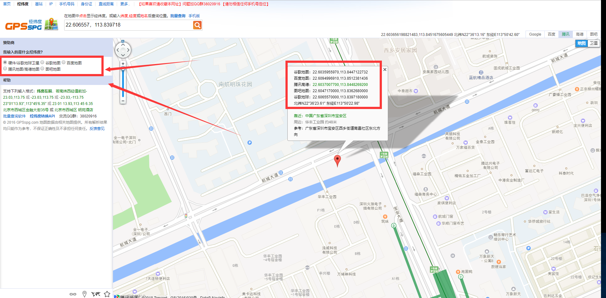

GPS
Get satellite positioning information, GPS chip connected with GPRS chip through UART2 internally, so UART 2 will receive GPS NMEA data if GPS open
example:demo/gps
Note: when using the positioning coordinates on the map, notice the conversion of coordinates, the location of the module output is WGS84 coordinates, if the Baidu map is used, it needs to be converted into BD-09 coordinates, if the Tencent map or Google map and so on, please convert to GCJ-02 coordinates (Mars coordinates) first, or otherwise display The result may be a huge error.
The original information format for GPS output is NMEA standard, such as the coordinate (2236.3934,11350.3831) representation (22° 36.3934′, 113°50.3831′), conversion degree: (22.606557°, 113.839718°), this is the WGS84 coordinate, and then copy to the map view tool to see the position in the map.

1. Function
1.1. GPS_Open
bool GPS_Open(UART_Callback_t gpsReceivedCallback);
Function
Open GPS power, GPS start work
Parameters
- gpsReceivedCallback：Serial callback function, if set to
NULL, the receipt of the serial port 2 received GPS data will not produce a callback, but the data of the GPS is sent to the main task in the way of events; if not forNULL, it will not produce an event, the set of serial callback function will be called, do not consume too much time in the processing function. It is suggested that the way of the event be used, refer to the GPS demo.
Return
- Is open GPS success
1.2. GPS_Close
bool GPS_Close();
Function
Close GPS power
Parameters
None
Return
- Is close GPS success